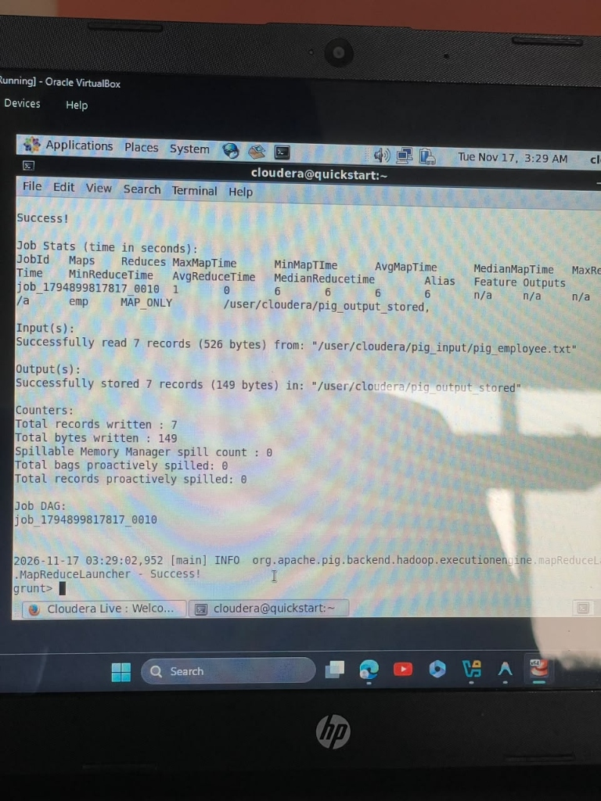
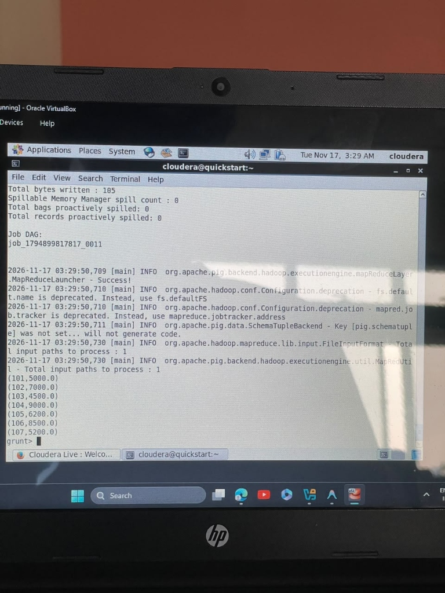
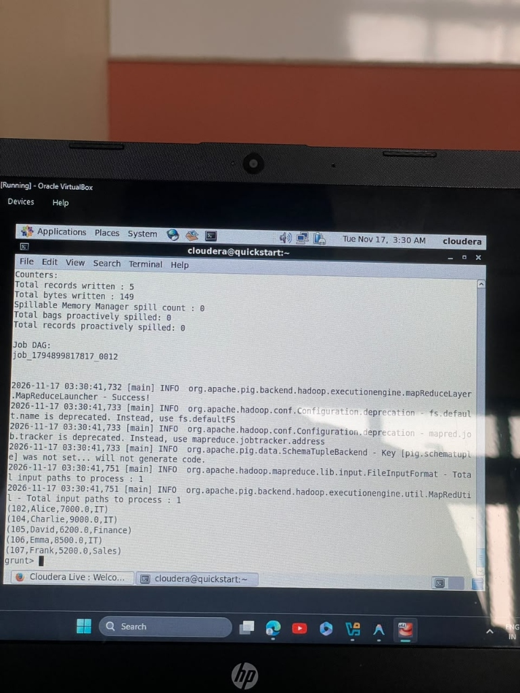
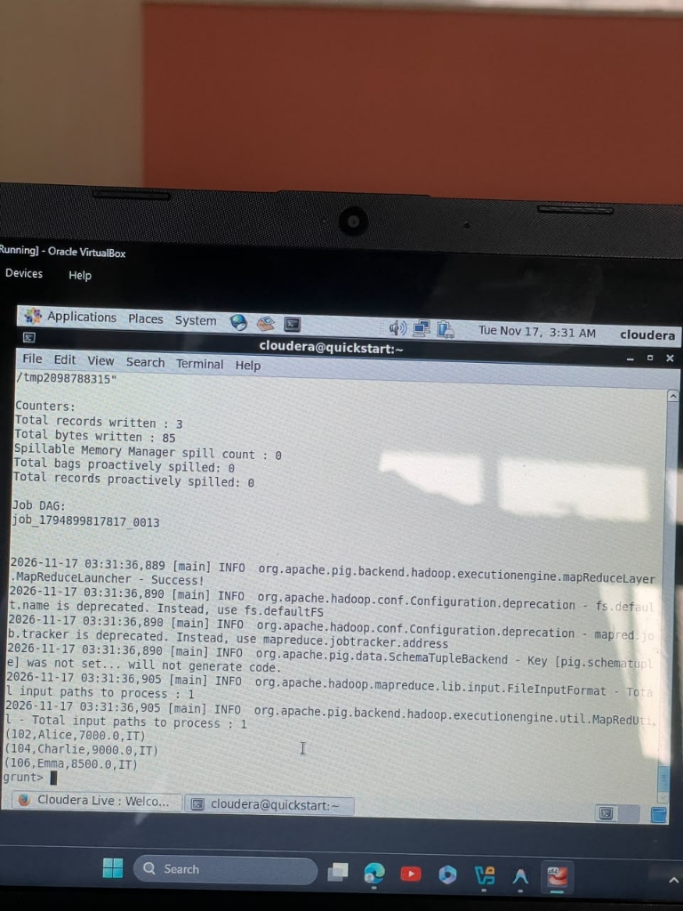
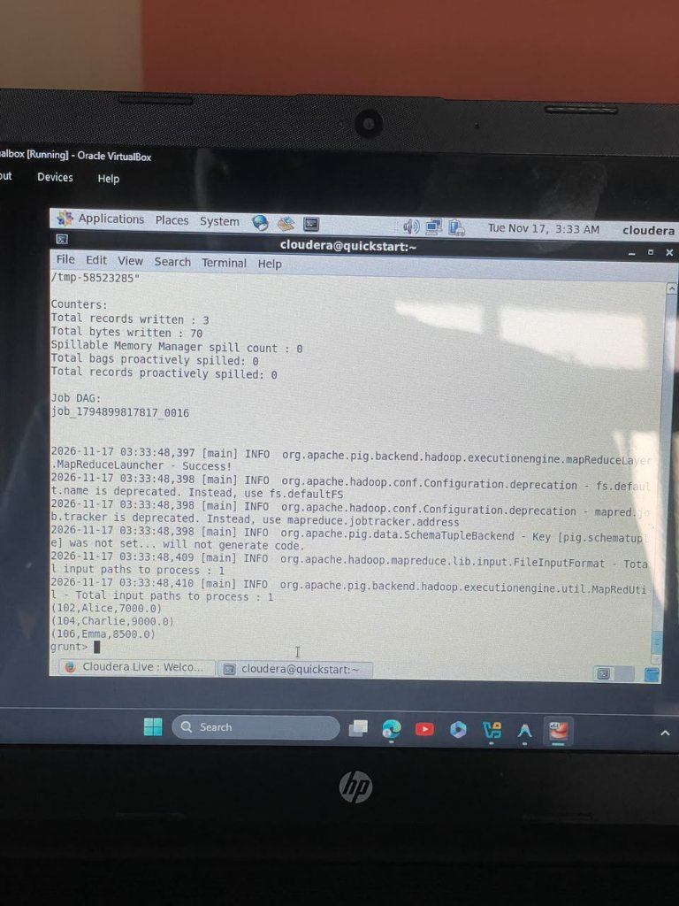

Question 1: Apache Pig Scripts on Employee Database
Apache Pig / Grunt Shell
Objective: Perform distributed data flow transformations, filtering, projections, arithmetic modifications, and sorting on an employee dataset using Pig Latin scripts in the Grunt shell.
Initial Employee Dataset Created:
101,John,5000,HR 102,Alice,7000,IT 103,Bob,4500,Sales 104,Charlie,9000,IT 105,David,6200,Finance 106,Emma,8500,IT 107,Frank,5200,Sales
1a. Load and Store Employee Database on Pig
-- Load CSV dataset from HDFS into Pig relation
emp = LOAD '/user/cloudera/pig_input/pig_employee.txt'
USING PigStorage(',')
AS (id:int, name:chararray, salary:double, dept:chararray);
-- Store transformed relation into HDFS directory
STORE emp INTO '/user/cloudera/pig_output_stored' USING PigStorage(',');

Screenshot 1.1: Verification of Pig STORE execution (7 records written to /user/cloudera/pig_output_stored)
Detailed Explanation of Screenshot 1.1:
Shows the successful completion of the Pig MapReduce job for
STORE emp INTO '/user/cloudera/pig_output_stored'. Pig compiled the Pig Latin script into a map-only job (MAP_ONLY) on YARN. The counters confirm: "Successfully read 7 records (526 bytes) from /user/cloudera/pig_input/pig_employee.txt" and "Successfully stored 7 records (149 bytes) in /user/cloudera/pig_output_stored" with zero spill count.
1b. View Id and Salary of Each Employee
b_proj = FOREACH emp GENERATE id, salary; DUMP b_proj;

Screenshot 1.2: Pig DUMP output displaying projected tuples (id, salary) for all employees
Detailed Explanation of Screenshot 1.2:
The
FOREACH ... GENERATE id, salary operator projects only the id and salary columns, discarding the name and department fields. The DUMP statement executes the underlying MapReduce pipeline, yielding all 7 projected tuples: (101,5000.0), (102,7000.0), (103,4500.0), (104,9000.0), (105,6200.0), (106,8500.0), and (107,5200.0).
1c. View Employee Details Who Are Drawing Salary > 5000
c_high_salary = FILTER emp BY salary > 5000; DUMP c_high_salary;

5000 Screenshot">Screenshot 1.3: Verification of FILTER emp BY salary > 5000 returning high-earning employee records
Detailed Explanation of Screenshot 1.3:
The
FILTER operator applies a predicate condition (salary > 5000). Employees John (5000) and Bob (4500) are excluded. The terminal displays the remaining 5 qualifying records: Alice (7000.0), Charlie (9000.0), David (6200.0), Emma (8500.0), and Frank (5200.0), matching the counter metric "Total records written: 5".
1d. View Details of All Employees in IT Department
d_it_dept = FILTER emp BY dept == 'IT'; DUMP d_it_dept;

Screenshot 1.4: FILTER emp BY dept == 'IT' isolating IT department staff
Detailed Explanation of Screenshot 1.4:
Filters the dataset strictly for rows matching
dept == 'IT'. Job counters record "Total records written: 3". The output correctly isolates the three IT personnel: (102, Alice, 7000.0, IT), (104, Charlie, 9000.0, IT), and (106, Emma, 8500.0, IT).
1e. View Details by Incrementing Salary of All Employees by 20%
e_inc = FOREACH emp GENERATE id, name, salary, (salary * 1.2) AS incremented_salary, dept; DUMP e_inc;
1f. View Employee Details Department-Wise Without Displaying Salary
f_no_salary = FOREACH emp GENERATE dept, id, name; DUMP f_no_salary;
1g. View Salary Details of Employee in IT Department Only
g_it_salary = FOREACH (FILTER emp BY dept == 'IT') GENERATE id, name, salary; DUMP g_it_salary;

Screenshot 1.5: Filtering dept == 'IT' and projecting id, name, and salary only
Detailed Explanation of Screenshot 1.5:
Combines predicate filtering with column projection: first filtering records where
dept == 'IT', then generating tuples containing only (id, name, salary). The resulting output shows: (102, Alice, 7000.0), (104, Charlie, 9000.0), and (106, Emma, 8500.0).
1h. Sort and View Employee Details by Ascending Order of Salary
h_sorted = ORDER emp BY salary ASC; DUMP h_sorted;

Screenshot 1.6: Verification of ORDER BY salary ASC displaying globally sorted tuples
Detailed Explanation of Screenshot 1.6:
The
ORDER BY salary ASC statement triggers a complete MapReduce sort phase. The reducer groups and outputs records in strictly ascending salary sequence: Bob (4500.0) → John (5000.0) → Frank (5200.0) → David (6200.0) → Alice (7000.0) → Emma (8500.0) → Charlie (9000.0).